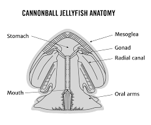

The species reside in estuaries (areas where freshwater and saltwater mix) and coastal areas. Their habitats range from the Gulf of Mexico to the Atlantic and Pacific Oceans. Cannonball Jellyfish prefer tropical waters around 8 °C, meaning they inhabit the epipelagic zone (0-200m below sea level). However, they are threatened by eutrophication (algal blooms), water pollution and overfishing.
Cannonball Jellyfish get their scientific name from their numerous oral arms. Their common name originates from their appearance. Their domes are around 18-25 cm wide and 13 cm tall. They weigh an average of 646g. Their lifespan lasts 3-6 months. The crown is somewhat milky, with the rim having a brown hue. For an unknown reason, some Cannonball Jellies in the Pacific Ocean are blue. Instead of having tentacles, this species has 16 short branching oral arms. They also have mucus-coated mouths. When disturbed, they sink deeper and secrete toxins.
Food of the Cannonball Jelly:
They secrete toxins to paralyze their prey. When their bell contracts, they suck in water to eat their food.
Enjoy a tiny documentary while you're at it!
They are high in protein and are incorporated into medicine in Asia.
Getting stung by a Cannonball Jellyfish is rare. Their sting is rather weak, only leaving minor skin and eye irritation. However, coming into contact with their toxins is a big problem. It causes irregularity in myocardial conduction (heart movement).
Symptoms include: